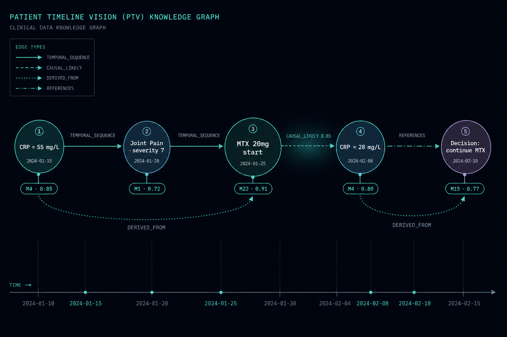
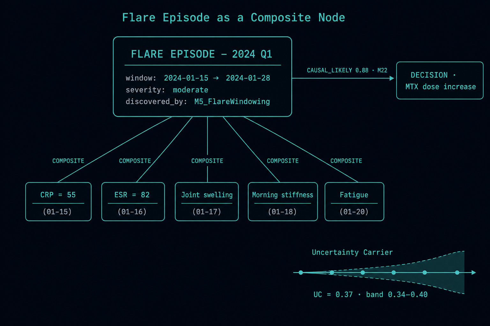
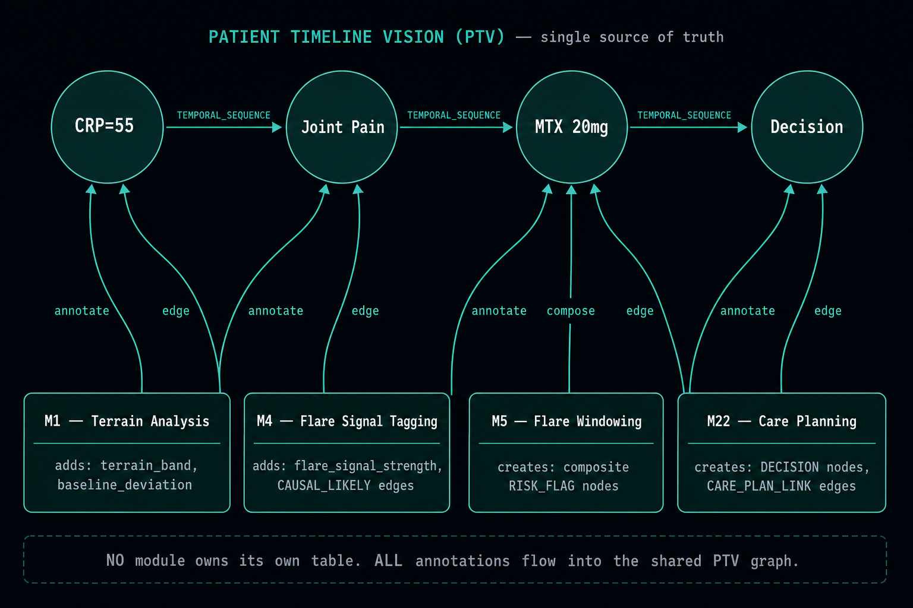
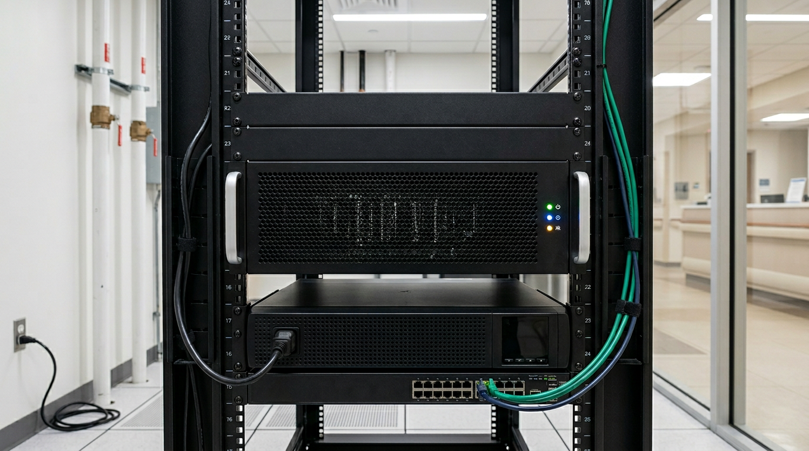

Provenance-first
Every claim cites events
Every node and edge records who created it, when, with what confidence. No floating assertions, no untraceable AI opinions.
We build provenance-first clinical AI for autoimmune second opinions. Every diagnosis, every dose change, every “why” carries an audit trail back to the events that produced it — and an explicit measure of what we still do not know.
Autoimmme phenomena and chronic illness — rheumatoid arthritis, lupus, IBD, the long autoimmune list — is diagnosed and managed across years, not visits. A flat EHR row cannot represent that. We treat each patient as an append-only knowledge graph of events, with typed relationships, confidence scores, and full module-level provenance, so a clinician’s second opinion is something the system can show its work on.
Every node and edge records who created it, when, with what confidence. No floating assertions, no untraceable AI opinions.
Records are never silently rewritten. Updates create new nodes that supersede old ones, preserving the full clinical lineage.
PortalNode-0 runs the full reasoning stack — LLMs, embeddings, OCR, graph — on a single GPU host that can leave the public internet entirely.
PatientTimelineVision (PTV) turns flat EHR rows
into a navigable knowledge graph. Nodes are clinical events (labs, meds, symptoms, notes,
decisions). Edges are typed relationships — TEMPORAL_SEQUENCE,
CAUSAL_LIKELY, DERIVED_FROM, REFERENCES — each
with a strength, a confidence, and the modules that discovered it.

These are constraints, not preferences. They live in the database, in triggers, and in the
PatientTimelineVisionAPI — not in best-effort review.
UPDATE or DELETE on event nodes. Corrections create a new node with a SUPERSEDES edge.DERIVED_FROM edge.discovered_by array cannot be empty. Anonymous edges do not exist.A clinical decision-support output without an attached uncertainty estimate is a patient-safety hazard. PTV makes Uncertainty Carriers (UCs) first-class graph nodes — deterministic, MCID-normalized, with explicit basis. The LLM reviews; it does not emit the carrier.

Missing questionnaires, sparse rounds, or contradictory edges all widen the carrier band — visibly, with a basis line that says so.
As PRO rounds and labs accumulate, the band narrows. Confidence is earned from data, not asserted by the model.
The Ethos-of-Health (EoH) modules — terrain analysis, flare-signal tagging, flare
windowing, care planning, prognostics, and the rest — do not maintain parallel data
stores. They annotate the same graph. One node accumulates layered enrichment from
every module that touches it; the discovered_by array tells you which.

For the FORWARD pilot, the entire reasoning stack runs on a single on-prem RTX-4090 host. The public Mac edge does TLS and reverse-proxy only; patient data never lands on its filesystem. The 4090 can be unplugged from the internet after setup and still serve the pilot on the LAN.

Internet
↓
Mac edge — nginx + Let’s Encrypt + static frontend
↓ (LAN only)
PortalNode-0 (RTX 4090)
· Postgres 16 + pgvector (5432, local socket)
· FastAPI (8000)
· Ollama (8B / 70B q4) (11434)
· OCR Forge (8765)
· BGE-base 768-d embedder (in-process, GPU)
· PatientTimelineVision API (graph + traversal)
Modes do not share state. Modes do not auto-transition. Each one is a contract with a documented streaming shape and a receipt for every event it emits.
Read-only retrieval over the canon. Each query is independent — no remembered preferences, no implicit state.
ICD-10-CM, ICD-11, SNOMED CT, LOINC, RxNorm with explicit probable / differential structure. JSON, CSV, or PDF out.
One reasoning pass: hypothesis set, evidence weighting, suggested next steps. No timeline assumed.
Temporal hypothesis evolution and inflection points across the patient’s graph. Surfaces the questions the arc itself asks.
2ndOpinionMD is a clinical instrument, not a chat product. The interface is closer to an ER-ICU monitor than to a consumer app: high contrast, monospaced data, no decorative gradients, no fake progress, no remembered preferences. Failures are surfaced honestly — cause, recovery path, audit entry — not papered over.